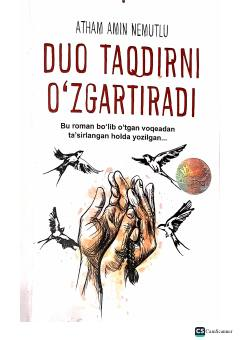

DTBir duo bilan taqdirni o'zgartirish mumkinligi haqida ta'sirchan roman.
Bu roman haqiqiy voqeadan ilhomlanib yozilgan bo'lib, insonning hayotidagi burilish nuqtalarini va duoning qudratini tasvirlaydi. Asarda qisqa bir duo orqali taqdirni o'zgartirish mumkinligi haqida chuqur fikrlar ilgari suriladi. Kitob turk muallifi Adham Amin Nemutlu tomonidan yozilgan va Oybek Xaydarov tomonidan o'zbek tiliga tarjima qilingan.